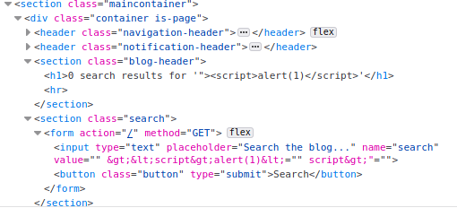

XSS in Tag attributes
What are Tag Attributes: https://www.w3schools.com/html/html_attributes.asp ◇ Attributes provide
additional information about elements
◇ Attributes are always specified in
the start tag ◇ Attributes usually come in name/value pairs like:
name="value"href="...", src="...", width="...", height="...", alt="...", style="...", lang="...", title="..."
When the XSS context is
into an
HTML tag attribute value, if you can
terminate the attribute value with quotes(" or ')•
close the tag with angle bracket(>), and introduce a new one.
Note: usually angle brackets are blocked or encoded, so your input cannot break out of the tag in which it appears.
example: "><script>alert(document.domain)</script> •
introduce a new attribute that creates a scriptable context, such as an event handler.
example: " autofocus onfocus=alert(document.domain) x=" The above payload creates an
onfocus event that will execute JavaScript when the element receives the focus, and also adds the autofocus attribute to try to trigger the onfocus event automatically without any user interaction. Finally, it adds x=" to gracefully repair the following markup.
HTML tag attributes(
https://html-css-js.com/html/tutorial/html-tag-attributes.php)
HTML Tag Attributes are modifiers for the HTML tags and they provide additional information. In most cases they are defined in name="value" pairs and they are always declared in the opening tag.
<tagname attributename="value" attibute2="othervalue" attribute3>
Some content
</tagname>